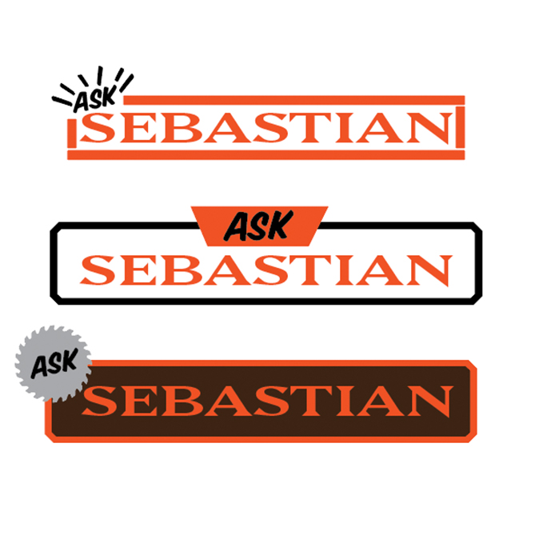
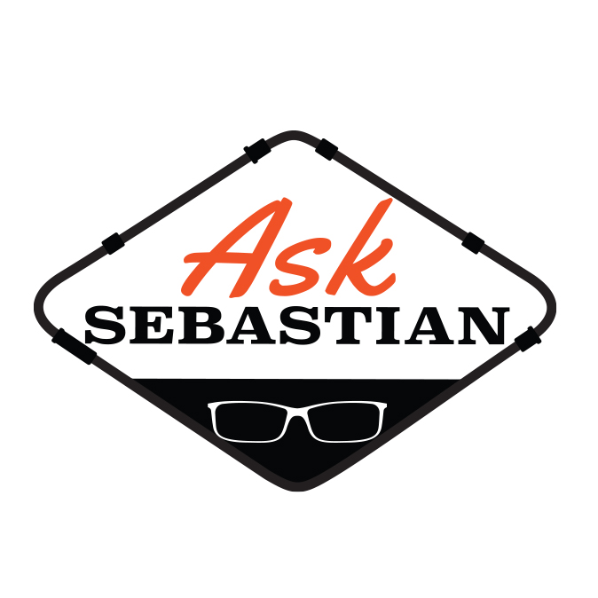

Fenwick Hardware
Logo Design "Ask Sebastian"
For my very first blog post I wanted to start with a project that has been almost as long in development as this website and blog. I developed this logo in the course of my job as digital designer for Menmonic Agency.
It all started back in late 2019, we had FINALLY launched the Mnemonic Brand website and we were starting to receive client based work from all over the country. One of the creative leads from the east coach reached out about a small town hardware store, that wanted to support their local contractors and grow their brand. The idea was to “Ask Sebastian” which would be the call to action on tv commercials, In-store displays and other collateral.

